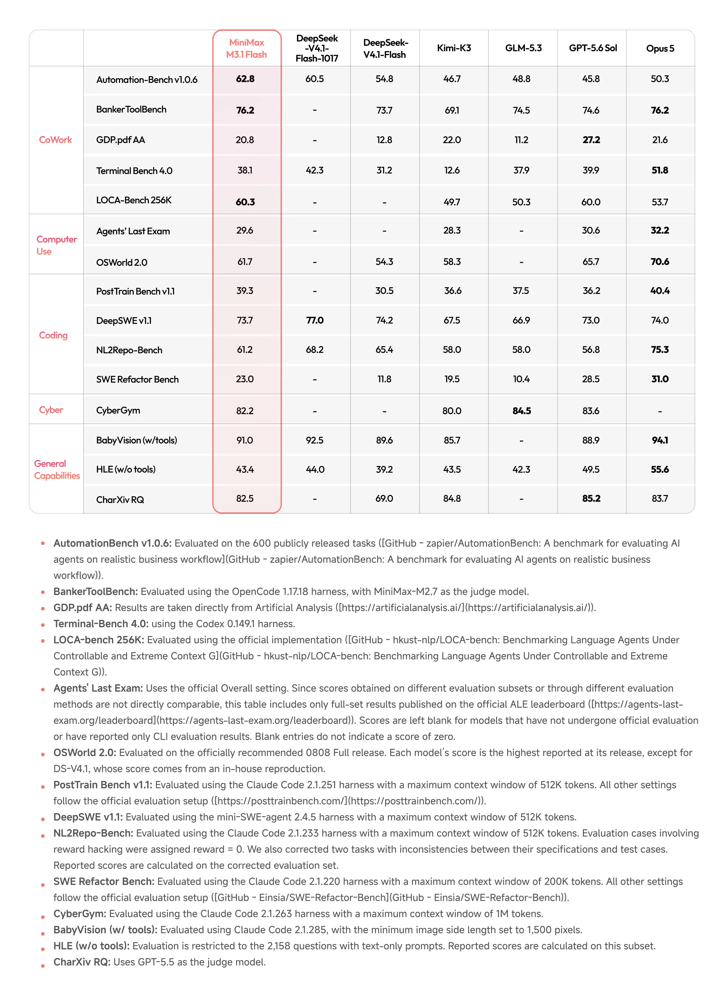
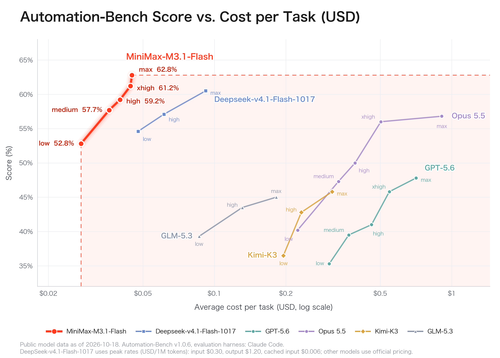
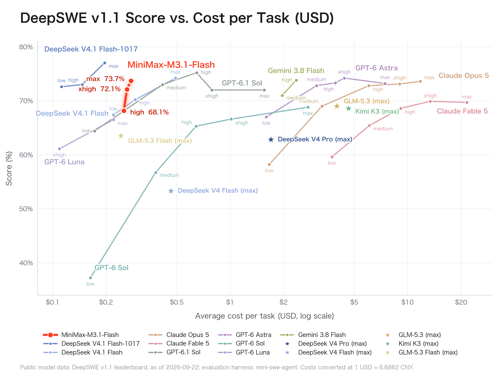

MiniMax: M3.1 Flash
title: "MiniMax: M3.1 Flash" source: https://www.minimax.io/blog/minimax-m31f author: unknown date: unknown models: [minimax-m3-1-flash] tags: [official, announcement] mirrored: 2026-10-22 note: mirrored against link rot by the Pantheon; all rights with the original author
MiniMax M3.1 Flash: Redefining Agent Performance and Cost
2026-10-19
AIM3.1 Flash
Today, we officially roll out MiniMax M3.1 Flash.
Space Bunny 🐰, which processed more than 200 trillion tokens while operating anonymously, was an early version of MiniMax M3.1 Flash.
As a next-generation Flash model, M3.1 Flash delivers a generational leap in agentic tasks, coding, Computer Use and cybersecurity, while making online inference nearly three times faster and reducing usage costs by 70%.
Stronger Capabilities Across the Board
M3.1 Flash improves across a broad range of benchmarks, reaching the level of leading models in complex agentic tasks (cowork), computer use, software development (coding), and cybersecurity.

Complex Tasks and Automation:
- M3.1 Flash ranks among the top performers on AutomationBench-AA. It can complete real enterprise workflows across SaaS systems, solving practical problems in sales, marketing, operations, customer service, finance, and HR from end to end.
- Scoring 76.2 on BankerToolBench, it excels at complex real-world challenges such as multi-step planning, maintaining consistency across documents and files, financial compliance, and chained tool calls.
Coding and Software Engineering:
- It achieves 73.7% on DeepSWE v1.1, placing it alongside top models. DeepSWE focuses on complex software tasks that require models to independently understand code, develop features, fix issues, and validate their work through testing. M3.1 Flash demonstrates strong execution across long sequences of steps, supporting complex software development workflows at a lower cost.
Computer Use:
- It scores 61.7 points on OSWorld V2, which measures AI computer operation and cross-application task execution, and 29.6 points on Agents’ Last Exam (ALE), which evaluates performance on real professional work and complex tasks. It ranks first among Chinese models on both benchmarks.
- M3.1 Flash demonstrates strong capabilities in interacting with real environments, using tools, and executing long sequences of tasks—moving beyond understanding a task to taking action and delivering results.
Cybersecurity:
- It achieves a strong score of 82% on CyberGym, demonstrating leading capabilities in vulnerability discovery and validation.
- In in-depth evaluations by our internal security experts, the model performed strongly in code auditing, vulnerability patching, penetration testing, malware analysis, and reverse engineering, enabling efficient, low-cost support for building complex security systems.
We have further optimized M3.1 Flash’s inference efficiency through more aggressive sparsity. In everyday use, output speeds can reach 200+ TPS (tokens per second), with median (P50) speeds consistently reaching 170+ TPS.
Pricing: Most Cost-Effective
For agentic tasks, the model’s overall usage cost is 70% lower than its predecessor.
Flat pricing per 1M tokens: $0.15 input · $0.60 output · $0.015 cached input.
ModelInput
USD / 1M tokensOutput
USD / 1M tokensCached input
USD / 1M tokens
MiniMax-
M3.1-Flash$0.15$0.60$0.015
Redefining Capability and Cost for Agentic Tasks
Across three benchmarks—Automation-Bench for complex agentic task execution, DeepSWE for real-world coding, and Agents’ Last Exam (ALE) for computer use in real-world tasks with economic value—M3.1 Flash delivers performance on par with top models at a very low task cost, setting a highly competitive new standard for performance and cost.



M3.1 Flash is now available through the MiniMax API, M Plan, and MiniMax Code. Model weights will be released later.
Download MiniMax Code for desktop: https://agent.minimax.io/download
Subscribe to M Plan: https://www.minimax.io/m-plan
API access: platform.minimax.io
Flash represents our ongoing exploration of the balance between efficiency and capability. Pro, which pushes the boundaries of intelligence, will also arrive later.
Intelligence with Everyone.